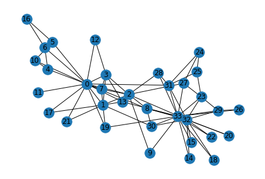
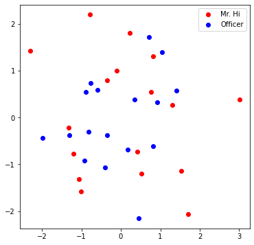
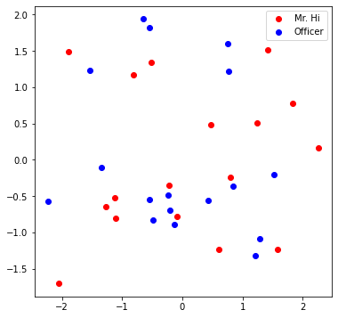

Graph Basics#
import networkx as nx
G = nx.karate_club_graph()
type(G) #undirected graph
networkx.classes.graph.Graph
import matplotlib.pyplot as plt
nx.draw(G , with_labels =True)

def average_degree(num_edges, num_nodes):
# TODO: Implement this function that takes number of edges
# and number of nodes, and returns the average node degree of
# the graph. Round the result to nearest integer (for example
# 3.3 will be rounded to 3 and 3.7 will be rounded to 4)
avg_degree = 0
############# Your code here ############
avg_degree = round(2 * num_edges / num_nodes)
#########################################
return avg_degree
num_edges = G.number_of_edges()
num_nodes = G.number_of_nodes()
avg_degree = average_degree(num_edges, num_nodes)
print("Average degree of karate club network is {}".format(avg_degree))
Average degree of karate club network is 5
import numpy as np
def average_clustering_coefficient(G):
# TODO: Implement this function that takes a nx.Graph
# and returns the average clustering coefficient. Round
# the result to 2 decimal places (for example 3.333 will
# be rounded to 3.33 and 3.7571 will be rounded to 3.76)
avg_cluster_coef = 0
############# Your code here ############
## Note:
## 1: Please use the appropriate NetworkX clustering function
avg_cluster_coef = round(np.array(list(nx.clustering(G).items())).sum(axis= 0)[1]/34 , 2)
#########################################
return avg_cluster_coef
avg_cluster_coef = average_clustering_coefficient(G)
print("Average clustering coefficient of karate club network is {}".format(avg_cluster_coef))
Average clustering coefficient of karate club network is 0.57
def one_iter_pagerank(G, beta, r0, node_id):
# TODO: Implement this function that takes a nx.Graph, beta, r0 and node id.
# The return value r1 is one interation PageRank value for the input node.
# Please round r1 to 2 decimal places.
r1 = 0
############# Your code here ############
## Note:
## 1: You should not use nx.pagerank
for neighbour in G.neighbors(node_id) :
r1 += beta*(r0 / G.degree[neighbour])
r1 += (1- beta)/G.number_of_nodes()
r1 = round(r1 , 2)
#########################################
return r1
beta = 0.8
r0 = 1 / G.number_of_nodes()
node = 0
r1 = one_iter_pagerank(G, beta, r0, node)
print("The PageRank value for node 0 after one iteration is {}".format(r1))
The PageRank value for node 0 after one iteration is 0.13
def closeness_centrality(G, node=5):
# TODO: Implement the function that calculates closeness centrality
# for a node in karate club network. G is the input karate club
# network and node is the node id in the graph. Please round the
# closeness centrality result to 2 decimal places.
closeness = 0
## Note:
## 1: You can use networkx closeness centrality function.
## 2: Notice that networkx closeness centrality returns the normalized
## closeness directly, which is different from the raw (unnormalized)
## one that we learned in the lecture.
closeness = nx.closeness_centrality(G, u=node)
closeness /= len(nx.node_connected_component(G, node)) - 1
closeness = round(closeness, 2)
#########################################
return closeness
node = 0
closeness = closeness_centrality(G, node=node)
print("The node 5 has closeness centrality {}".format(closeness))
The node 5 has closeness centrality 0.02
Working with Tensors#
import torch
print(torch.__version__)
1.12.0+cu116
torch.cuda.is_available()
True
torch.cuda.device_count()
1
torch.cuda.current_device()
0
torch.cuda.device(0)
<torch.cuda.device at 0x1fd7ed4a2e0>
# Generate 3 x 4 tensor with all ones
ones = torch.ones(3, 4)
print(ones)
# Generate 3 x 4 tensor with all zeros
zeros = torch.zeros(3, 4)
print(zeros)
# Generate 3 x 4 tensor with random values on the interval [0, 1)
random_tensor = torch.rand(3, 4)
print(random_tensor)
# Get the shape of the tensor
print(ones.shape)
tensor([[1., 1., 1., 1.],
[1., 1., 1., 1.],
[1., 1., 1., 1.]])
tensor([[0., 0., 0., 0.],
[0., 0., 0., 0.],
[0., 0., 0., 0.]])
tensor([[0.2927, 0.7287, 0.4101, 0.7670],
[0.8930, 0.0994, 0.2291, 0.2190],
[0.7820, 0.2043, 0.3064, 0.8101]])
torch.Size([3, 4])
zeros = torch.zeros(3, 4, dtype=torch.float32)
print(zeros.dtype)
# Change the tensor dtype to 64-bit integer
zeros = zeros.type(torch.long)
print(zeros.dtype)
torch.float32
torch.int64
def graph_to_edge_list(G):
# TODO: Implement the function that returns the edge list of
# an nx.Graph. The returned edge_list should be a list of tuples
# where each tuple is a tuple representing an edge connected
# by two nodes.
edge_list = []
############# Your code here ############
edge_list = nx.edges(G)
#########################################
return edge_list
def edge_list_to_tensor(edge_list):
# TODO: Implement the function that transforms the edge_list to
# tensor. The input edge_list is a list of tuples and the resulting
# tensor should have the shape [2 x len(edge_list)].
############# Your code here ############
edge_index = torch.tensor(np.array(list(edge_list))).T
#########################################
return edge_index
pos_edge_list = graph_to_edge_list(G)
pos_edge_index = edge_list_to_tensor(pos_edge_list)
print("The pos_edge_index tensor has shape {}".format(pos_edge_index.shape))
print("The pos_edge_index tensor has sum value {}".format(torch.sum(pos_edge_index)))
The pos_edge_index tensor has shape torch.Size([2, 78])
The pos_edge_index tensor has sum value 2535
import random
def sample_negative_edges(G, num_neg_samples):
# TODO: Implement the function that returns a list of negative edges.
# The number of sampled negative edges is num_neg_samples. You do not
# need to consider the corner case when the number of possible negative edges
# is less than num_neg_samples. It should be ok as long as your implementation
# works on the karate club network. In this implementation, self loops should
# not be considered as either a positive or negative edge. Also, notice that
# the karate club network is an undirected graph, if (0, 1) is a positive
# edge, do you think (1, 0) can be a negative one?
neg_edge_list = []
############# Your code here ############
pos_edge_list = graph_to_edge_list(G)
for node1 in G.nodes():
for node2 in G.nodes():
if node1 < node2:
if (node1, node2) not in pos_edge_list:
neg_edge_list.append((node1, node2))
neg_edge_list = random.sample(neg_edge_list, num_neg_samples)
#########################################
return neg_edge_list
# Sample 78 negative edges
neg_edge_list = sample_negative_edges(G, len(pos_edge_list))
# Transform the negative edge list to tensor
neg_edge_index = edge_list_to_tensor(neg_edge_list)
print("The neg_edge_index tensor has shape {}".format(neg_edge_index.shape))
# Which of following edges can be negative ones?
edge_1 = (7, 1)
edge_2 = (1, 33)
edge_3 = (33, 22)
edge_4 = (0, 4)
edge_5 = (4, 2)
############# Your code here ############
## Note:
## 1: For each of the 5 edges, print whether it can be negative edge
pos_edge_list = graph_to_edge_list(G)
for edge in [edge_1, edge_2, edge_3, edge_4, edge_5]:
if edge in pos_edge_list:
print("No")
else:
print("Yes")
#########################################
The neg_edge_index tensor has shape torch.Size([2, 78])
No
Yes
No
No
Yes
Node Embedding Learning#
import torch
import torch.nn as nn
import matplotlib.pyplot as plt
from sklearn.decomposition import PCA
print(torch.__version__)
1.12.0+cu116
# Initialize an embedding layer
# Suppose we want to have embedding for 4 items (e.g., nodes)
# Each item is represented with 8 dimensional vector
emb_sample = nn.Embedding(num_embeddings=4, embedding_dim=8)
print('Sample embedding layer: {}'.format(emb_sample))
Sample embedding layer: Embedding(4, 8)
# Select an embedding in emb_sample
id = torch.LongTensor([1])
print(emb_sample(id))
# Select multiple embeddings
ids = torch.LongTensor([1, 3])
print(emb_sample(ids))
# Get the shape of the embedding weight matrix
shape = emb_sample.weight.data.shape
print(shape)
# Overwrite the weight to tensor with all ones
emb_sample.weight.data = torch.ones(shape)
# Let's check if the emb is indeed initilized
ids = torch.LongTensor([0,1,2, 3])
print(emb_sample(ids))
tensor([[ 0.3563, -0.5378, 2.0419, 0.0728, -1.7634, -0.3756, -0.2447, 1.6240]],
grad_fn=<EmbeddingBackward0>)
tensor([[ 0.3563, -0.5378, 2.0419, 0.0728, -1.7634, -0.3756, -0.2447, 1.6240],
[ 0.2629, 0.7834, -0.7142, 1.1068, 0.4714, 1.0291, -1.4547, 1.2745]],
grad_fn=<EmbeddingBackward0>)
torch.Size([4, 8])
tensor([[1., 1., 1., 1., 1., 1., 1., 1.],
[1., 1., 1., 1., 1., 1., 1., 1.],
[1., 1., 1., 1., 1., 1., 1., 1.],
[1., 1., 1., 1., 1., 1., 1., 1.]], grad_fn=<EmbeddingBackward0>)
# Please do not change / reset the random seed
torch.manual_seed(1)
def create_node_emb(num_node=34, embedding_dim=16):
# TODO: Implement this function that will create the node embedding matrix.
# A torch.nn.Embedding layer will be returned. You do not need to change
# the values of num_node and embedding_dim. The weight matrix of returned
# layer should be initialized under uniform distribution.
emb = None
############# Your code here ############
emb = nn.Embedding(num_embeddings=num_node, embedding_dim=embedding_dim)
emb.weight.data = torch.rand(num_node,embedding_dim)
#########################################
return emb
emb = create_node_emb()
ids = torch.LongTensor([0, 3])
# Print the embedding layer
print("Embedding: {}".format(emb))
# An example that gets the embeddings for node 0 and 3
print(emb(ids))
Embedding: Embedding(34, 16)
tensor([[0.2114, 0.7335, 0.1433, 0.9647, 0.2933, 0.7951, 0.5170, 0.2801, 0.8339,
0.1185, 0.2355, 0.5599, 0.8966, 0.2858, 0.1955, 0.1808],
[0.7486, 0.6546, 0.3843, 0.9820, 0.6012, 0.3710, 0.4929, 0.9915, 0.8358,
0.4629, 0.9902, 0.7196, 0.2338, 0.0450, 0.7906, 0.9689]],
grad_fn=<EmbeddingBackward0>)
def visualize_emb(emb):
X = emb.weight.data.numpy()
pca = PCA(n_components=4)
components = pca.fit_transform(X)
plt.figure(figsize=(6, 6))
club1_x = []
club1_y = []
club2_x = []
club2_y = []
for node in G.nodes(data=True):
if node[1]['club'] == 'Mr. Hi':
club1_x.append(components[node[0]][2])
club1_y.append(components[node[0]][3])
else:
club2_x.append(components[node[0]][2])
club2_y.append(components[node[0]][3])
plt.scatter(club1_x, club1_y, color="red", label="Mr. Hi")
plt.scatter(club2_x, club2_y, color="blue", label="Officer")
plt.legend()
plt.show()
# Visualize the initial random embeddding
visualize_emb(emb)

from torch.optim import SGD
import torch.nn as nn
def accuracy(pred, label):
# TODO: Implement the accuracy function. This function takes the
# pred tensor (the resulting tensor after sigmoid) and the label
# tensor (torch.LongTensor). Predicted value greater than 0.5 will
# be classified as label 1. Else it will be classified as label 0.
# The returned accuracy should be rounded to 4 decimal places.
# For example, accuracy 0.82956 will be rounded to 0.8296.
accu = 0.0
############# Your code here ############
accu = round(np.sum(np.array(label) == pred)/len(pred) , 4)
#########################################
return accu
def train(emb, loss_fn, sigmoid, train_label, train_edge):
# TODO: Train the embedding layer here. You can also change epochs and
# learning rate. In general, you need to implement:
# (1) Get the embeddings of the nodes in train_edge
# (2) Dot product the embeddings between each node pair
# (3) Feed the dot product result into sigmoid
# (4) Feed the sigmoid output into the loss_fn
# (5) Print both loss and accuracy of each epoch
# (6) Update the embeddings using the loss and optimizer
# (as a sanity check, the loss should decrease during training)
epochs = 500
learning_rate = 0.1
optimizer = SGD(emb.parameters(), lr=learning_rate, momentum=0.9)
for i in range(epochs):
optimizer.zero_grad()
node_emb = emb(train_edge)
dot_product = torch.sum(node_emb[0] * node_emb[1], -1)
result = sigmoid(dot_product)
loss = loss_fn(result, train_label)
pred = np.array(result > 0.5)
accu = accuracy(pred , train_label)
print("Epoch:", i, "Loss:", loss.item(),
"Acc:", accu)
loss.backward()
optimizer.step()
############# Your code here ############
#########################################
return emb
loss_fn = nn.BCELoss()
sigmoid = nn.Sigmoid()
print(pos_edge_index.shape)
# Generate the positive and negative labels
pos_label = torch.ones(pos_edge_index.shape[1], )
neg_label = torch.zeros(neg_edge_index.shape[1], )
# Concat positive and negative labels into one tensor
train_label = torch.cat([pos_label, neg_label], dim=0)
# Concat positive and negative edges into one tensor
# Since the network is very small, we do not split the edges into val/test sets
train_edge = torch.cat([pos_edge_index, neg_edge_index], dim=1)
print(train_edge.shape)
emb = create_node_emb()
emb= train(emb, loss_fn, sigmoid, train_label, train_edge)
torch.Size([2, 78])
torch.Size([2, 156])
Epoch: 0 Loss: 1.9233864545822144 Acc: 0.5
Epoch: 1 Loss: 1.9103221893310547 Acc: 0.5
Epoch: 2 Loss: 1.8857134580612183 Acc: 0.5
Epoch: 3 Loss: 1.8511013984680176 Acc: 0.5
Epoch: 4 Loss: 1.8080121278762817 Acc: 0.5
Epoch: 5 Loss: 1.7579302787780762 Acc: 0.5
Epoch: 6 Loss: 1.7022756338119507 Acc: 0.5
Epoch: 7 Loss: 1.6423882246017456 Acc: 0.5
Epoch: 8 Loss: 1.579516887664795 Acc: 0.5
Epoch: 9 Loss: 1.5148097276687622 Acc: 0.5
Epoch: 10 Loss: 1.4493069648742676 Acc: 0.5
Epoch: 11 Loss: 1.3839359283447266 Acc: 0.5
Epoch: 12 Loss: 1.319507122039795 Acc: 0.5
Epoch: 13 Loss: 1.2567119598388672 Acc: 0.5
Epoch: 14 Loss: 1.1961236000061035 Acc: 0.5
Epoch: 15 Loss: 1.1381973028182983 Acc: 0.5
Epoch: 16 Loss: 1.0832761526107788 Acc: 0.5
Epoch: 17 Loss: 1.0315979719161987 Acc: 0.5
Epoch: 18 Loss: 0.9833033680915833 Acc: 0.5
Epoch: 19 Loss: 0.9384481906890869 Acc: 0.5
Epoch: 20 Loss: 0.8970142006874084 Acc: 0.5
Epoch: 21 Loss: 0.8589233160018921 Acc: 0.5064
Epoch: 22 Loss: 0.8240487575531006 Acc: 0.5064
Epoch: 23 Loss: 0.7922285795211792 Acc: 0.5192
Epoch: 24 Loss: 0.7632760405540466 Acc: 0.5192
Epoch: 25 Loss: 0.7369890809059143 Acc: 0.5256
Epoch: 26 Loss: 0.713158905506134 Acc: 0.5321
Epoch: 27 Loss: 0.6915759444236755 Acc: 0.5385
Epoch: 28 Loss: 0.6720357537269592 Acc: 0.5513
Epoch: 29 Loss: 0.6543418169021606 Acc: 0.5769
Epoch: 30 Loss: 0.6383087038993835 Acc: 0.5769
Epoch: 31 Loss: 0.6237636208534241 Acc: 0.5897
Epoch: 32 Loss: 0.6105470657348633 Acc: 0.6154
Epoch: 33 Loss: 0.5985127091407776 Acc: 0.6282
Epoch: 34 Loss: 0.5875280499458313 Acc: 0.6346
Epoch: 35 Loss: 0.5774732232093811 Acc: 0.641
Epoch: 36 Loss: 0.5682402849197388 Acc: 0.6474
Epoch: 37 Loss: 0.559732973575592 Acc: 0.6731
Epoch: 38 Loss: 0.5518650412559509 Acc: 0.6859
Epoch: 39 Loss: 0.5445600152015686 Acc: 0.6987
Epoch: 40 Loss: 0.5377498269081116 Acc: 0.7051
Epoch: 41 Loss: 0.5313742756843567 Acc: 0.7115
Epoch: 42 Loss: 0.5253799557685852 Acc: 0.7244
Epoch: 43 Loss: 0.5197198987007141 Acc: 0.7179
Epoch: 44 Loss: 0.5143525004386902 Acc: 0.7244
Epoch: 45 Loss: 0.5092412233352661 Acc: 0.7436
Epoch: 46 Loss: 0.5043537616729736 Acc: 0.75
Epoch: 47 Loss: 0.4996616542339325 Acc: 0.75
Epoch: 48 Loss: 0.495140016078949 Acc: 0.7628
Epoch: 49 Loss: 0.4907669126987457 Acc: 0.7756
Epoch: 50 Loss: 0.4865231215953827 Acc: 0.8013
Epoch: 51 Loss: 0.48239174485206604 Acc: 0.8013
Epoch: 52 Loss: 0.4783579111099243 Acc: 0.8077
Epoch: 53 Loss: 0.47440865635871887 Acc: 0.8141
Epoch: 54 Loss: 0.47053277492523193 Acc: 0.8141
Epoch: 55 Loss: 0.46672019362449646 Acc: 0.8205
Epoch: 56 Loss: 0.4629623293876648 Acc: 0.8269
Epoch: 57 Loss: 0.45925164222717285 Acc: 0.8269
Epoch: 58 Loss: 0.4555816650390625 Acc: 0.8269
Epoch: 59 Loss: 0.45194655656814575 Acc: 0.8333
Epoch: 60 Loss: 0.448341429233551 Acc: 0.8397
Epoch: 61 Loss: 0.4447621703147888 Acc: 0.8397
Epoch: 62 Loss: 0.44120484590530396 Acc: 0.8526
Epoch: 63 Loss: 0.4376666247844696 Acc: 0.8526
Epoch: 64 Loss: 0.4341447353363037 Acc: 0.8526
Epoch: 65 Loss: 0.43063682317733765 Acc: 0.859
Epoch: 66 Loss: 0.42714112997055054 Acc: 0.859
Epoch: 67 Loss: 0.42365607619285583 Acc: 0.8718
Epoch: 68 Loss: 0.4201802611351013 Acc: 0.8782
Epoch: 69 Loss: 0.41671258211135864 Acc: 0.8782
Epoch: 70 Loss: 0.41325241327285767 Acc: 0.8782
Epoch: 71 Loss: 0.4097990393638611 Acc: 0.8782
Epoch: 72 Loss: 0.4063519835472107 Acc: 0.8782
Epoch: 73 Loss: 0.40291091799736023 Acc: 0.8782
Epoch: 74 Loss: 0.3994756042957306 Acc: 0.8782
Epoch: 75 Loss: 0.3960461914539337 Acc: 0.8782
Epoch: 76 Loss: 0.3926224708557129 Acc: 0.8782
Epoch: 77 Loss: 0.3892047703266144 Acc: 0.8782
Epoch: 78 Loss: 0.38579317927360535 Acc: 0.8782
Epoch: 79 Loss: 0.38238799571990967 Acc: 0.8782
Epoch: 80 Loss: 0.3789895474910736 Acc: 0.8782
Epoch: 81 Loss: 0.37559834122657776 Acc: 0.8846
Epoch: 82 Loss: 0.37221476435661316 Acc: 0.891
Epoch: 83 Loss: 0.36883920431137085 Acc: 0.9038
Epoch: 84 Loss: 0.3654722571372986 Acc: 0.9038
Epoch: 85 Loss: 0.36211445927619934 Acc: 0.9167
Epoch: 86 Loss: 0.3587663471698761 Acc: 0.9167
Epoch: 87 Loss: 0.3554285168647766 Acc: 0.9167
Epoch: 88 Loss: 0.35210153460502625 Acc: 0.9167
Epoch: 89 Loss: 0.34878602623939514 Acc: 0.9167
Epoch: 90 Loss: 0.34548261761665344 Acc: 0.9231
Epoch: 91 Loss: 0.34219181537628174 Acc: 0.9231
Epoch: 92 Loss: 0.3389144241809845 Acc: 0.9231
Epoch: 93 Loss: 0.33565089106559753 Acc: 0.9295
Epoch: 94 Loss: 0.33240190148353577 Acc: 0.9359
Epoch: 95 Loss: 0.32916802167892456 Acc: 0.9359
Epoch: 96 Loss: 0.32594987750053406 Acc: 0.9359
Epoch: 97 Loss: 0.32274800539016724 Acc: 0.9487
Epoch: 98 Loss: 0.3195629417896271 Acc: 0.9487
Epoch: 99 Loss: 0.3163953423500061 Acc: 0.9551
Epoch: 100 Loss: 0.31324565410614014 Acc: 0.9615
Epoch: 101 Loss: 0.31011444330215454 Acc: 0.9615
Epoch: 102 Loss: 0.3070021867752075 Acc: 0.9615
Epoch: 103 Loss: 0.3039093613624573 Acc: 0.9615
Epoch: 104 Loss: 0.3008364737033844 Acc: 0.9615
Epoch: 105 Loss: 0.2977839410305023 Acc: 0.9615
Epoch: 106 Loss: 0.2947521507740021 Acc: 0.9615
Epoch: 107 Loss: 0.2917415499687195 Acc: 0.9679
Epoch: 108 Loss: 0.2887524962425232 Acc: 0.9679
Epoch: 109 Loss: 0.28578537702560425 Acc: 0.9679
Epoch: 110 Loss: 0.2828404903411865 Acc: 0.9744
Epoch: 111 Loss: 0.2799181640148163 Acc: 0.9744
Epoch: 112 Loss: 0.27701863646507263 Acc: 0.9744
Epoch: 113 Loss: 0.2741422951221466 Acc: 0.9808
Epoch: 114 Loss: 0.2712893486022949 Acc: 0.9808
Epoch: 115 Loss: 0.2684599459171295 Acc: 0.9808
Epoch: 116 Loss: 0.2656543254852295 Acc: 0.9808
Epoch: 117 Loss: 0.26287272572517395 Acc: 0.9872
Epoch: 118 Loss: 0.26011526584625244 Acc: 0.9872
Epoch: 119 Loss: 0.2573821246623993 Acc: 0.9872
Epoch: 120 Loss: 0.25467339158058167 Acc: 0.9872
Epoch: 121 Loss: 0.2519892454147339 Acc: 0.9872
Epoch: 122 Loss: 0.24932973086833954 Acc: 0.9872
Epoch: 123 Loss: 0.246694877743721 Acc: 0.9872
Epoch: 124 Loss: 0.24408486485481262 Acc: 0.9872
Epoch: 125 Loss: 0.2414996325969696 Acc: 0.9936
Epoch: 126 Loss: 0.2389392852783203 Acc: 0.9936
Epoch: 127 Loss: 0.23640377819538116 Acc: 0.9936
Epoch: 128 Loss: 0.23389317095279694 Acc: 0.9936
Epoch: 129 Loss: 0.23140743374824524 Acc: 0.9936
Epoch: 130 Loss: 0.22894656658172607 Acc: 0.9936
Epoch: 131 Loss: 0.22651046514511108 Acc: 0.9936
Epoch: 132 Loss: 0.22409912943840027 Acc: 0.9936
Epoch: 133 Loss: 0.22171255946159363 Acc: 0.9936
Epoch: 134 Loss: 0.21935062110424042 Acc: 0.9936
Epoch: 135 Loss: 0.21701328456401825 Acc: 0.9936
Epoch: 136 Loss: 0.21470046043395996 Acc: 0.9936
Epoch: 137 Loss: 0.212412029504776 Acc: 0.9936
Epoch: 138 Loss: 0.2101479321718216 Acc: 0.9936
Epoch: 139 Loss: 0.20790809392929077 Acc: 0.9936
Epoch: 140 Loss: 0.2056923657655716 Acc: 0.9936
Epoch: 141 Loss: 0.20350058376789093 Acc: 0.9936
Epoch: 142 Loss: 0.20133273303508759 Acc: 0.9936
Epoch: 143 Loss: 0.19918864965438843 Acc: 0.9936
Epoch: 144 Loss: 0.1970681995153427 Acc: 0.9936
Epoch: 145 Loss: 0.1949712187051773 Acc: 0.9936
Epoch: 146 Loss: 0.19289760291576385 Acc: 0.9936
Epoch: 147 Loss: 0.1908472329378128 Acc: 0.9936
Epoch: 148 Loss: 0.18881991505622864 Acc: 0.9936
Epoch: 149 Loss: 0.18681550025939941 Acc: 0.9936
Epoch: 150 Loss: 0.18483389914035797 Acc: 0.9936
Epoch: 151 Loss: 0.1828749179840088 Acc: 0.9936
Epoch: 152 Loss: 0.18093834817409515 Acc: 0.9936
Epoch: 153 Loss: 0.1790240854024887 Acc: 0.9936
Epoch: 154 Loss: 0.17713198065757751 Acc: 0.9936
Epoch: 155 Loss: 0.17526184022426605 Acc: 0.9936
Epoch: 156 Loss: 0.17341348528862 Acc: 0.9936
Epoch: 157 Loss: 0.1715867519378662 Acc: 0.9936
Epoch: 158 Loss: 0.16978152096271515 Acc: 0.9936
Epoch: 159 Loss: 0.1679975539445877 Acc: 0.9936
Epoch: 160 Loss: 0.16623471677303314 Acc: 0.9936
Epoch: 161 Loss: 0.16449280083179474 Acc: 0.9936
Epoch: 162 Loss: 0.16277167201042175 Acc: 0.9936
Epoch: 163 Loss: 0.16107109189033508 Acc: 0.9936
Epoch: 164 Loss: 0.15939094126224518 Acc: 0.9936
Epoch: 165 Loss: 0.15773101150989532 Acc: 0.9936
Epoch: 166 Loss: 0.15609110891819 Acc: 0.9936
Epoch: 167 Loss: 0.15447108447551727 Acc: 0.9936
Epoch: 168 Loss: 0.15287072956562042 Acc: 0.9936
Epoch: 169 Loss: 0.15128985047340393 Acc: 0.9936
Epoch: 170 Loss: 0.14972831308841705 Acc: 0.9936
Epoch: 171 Loss: 0.1481858789920807 Acc: 0.9936
Epoch: 172 Loss: 0.1466623991727829 Acc: 1.0
Epoch: 173 Loss: 0.14515765011310577 Acc: 1.0
Epoch: 174 Loss: 0.14367146790027618 Acc: 1.0
Epoch: 175 Loss: 0.1422036737203598 Acc: 1.0
Epoch: 176 Loss: 0.14075405895709991 Acc: 1.0
Epoch: 177 Loss: 0.1393224447965622 Acc: 1.0
Epoch: 178 Loss: 0.13790863752365112 Acc: 1.0
Epoch: 179 Loss: 0.13651247322559357 Acc: 1.0
Epoch: 180 Loss: 0.1351337432861328 Acc: 1.0
Epoch: 181 Loss: 0.13377225399017334 Acc: 1.0
Epoch: 182 Loss: 0.1324278563261032 Acc: 1.0
Epoch: 183 Loss: 0.13110029697418213 Acc: 1.0
Epoch: 184 Loss: 0.12978947162628174 Acc: 1.0
Epoch: 185 Loss: 0.12849511206150055 Acc: 1.0
Epoch: 186 Loss: 0.12721706926822662 Acc: 1.0
Epoch: 187 Loss: 0.12595519423484802 Acc: 1.0
Epoch: 188 Loss: 0.12470924854278564 Acc: 1.0
Epoch: 189 Loss: 0.12347904592752457 Acc: 1.0
Epoch: 190 Loss: 0.12226443737745285 Acc: 1.0
Epoch: 191 Loss: 0.12106521427631378 Acc: 1.0
Epoch: 192 Loss: 0.11988120526075363 Acc: 1.0
Epoch: 193 Loss: 0.11871221661567688 Acc: 1.0
Epoch: 194 Loss: 0.11755809932947159 Acc: 1.0
Epoch: 195 Loss: 0.11641862988471985 Acc: 1.0
Epoch: 196 Loss: 0.11529365926980972 Acc: 1.0
Epoch: 197 Loss: 0.1141829863190651 Acc: 1.0
Epoch: 198 Loss: 0.11308644711971283 Acc: 1.0
Epoch: 199 Loss: 0.1120038628578186 Acc: 1.0
Epoch: 200 Loss: 0.11093506217002869 Acc: 1.0
Epoch: 201 Loss: 0.10987988859415054 Acc: 1.0
Epoch: 202 Loss: 0.10883813351392746 Acc: 1.0
Epoch: 203 Loss: 0.1078096255660057 Acc: 1.0
Epoch: 204 Loss: 0.10679423809051514 Acc: 1.0
Epoch: 205 Loss: 0.10579175502061844 Acc: 1.0
Epoch: 206 Loss: 0.10480201989412308 Acc: 1.0
Epoch: 207 Loss: 0.10382489860057831 Acc: 1.0
Epoch: 208 Loss: 0.10286016762256622 Acc: 1.0
Epoch: 209 Loss: 0.10190772265195847 Acc: 1.0
Epoch: 210 Loss: 0.10096736997365952 Acc: 1.0
Epoch: 211 Loss: 0.10003895312547684 Acc: 1.0
Epoch: 212 Loss: 0.0991223156452179 Acc: 1.0
Epoch: 213 Loss: 0.09821730107069016 Acc: 1.0
Epoch: 214 Loss: 0.09732373803853989 Acc: 1.0
Epoch: 215 Loss: 0.09644149988889694 Acc: 1.0
Epoch: 216 Loss: 0.0955704003572464 Acc: 1.0
Epoch: 217 Loss: 0.09471031278371811 Acc: 1.0
Epoch: 218 Loss: 0.09386108070611954 Acc: 1.0
Epoch: 219 Loss: 0.09302254766225815 Acc: 1.0
Epoch: 220 Loss: 0.0921945795416832 Acc: 1.0
Epoch: 221 Loss: 0.09137702733278275 Acc: 1.0
Epoch: 222 Loss: 0.09056974202394485 Acc: 1.0
Epoch: 223 Loss: 0.08977258205413818 Acc: 1.0
Epoch: 224 Loss: 0.08898541331291199 Acc: 1.0
Epoch: 225 Loss: 0.08820807933807373 Acc: 1.0
Epoch: 226 Loss: 0.08744047582149506 Acc: 1.0
Epoch: 227 Loss: 0.08668243139982224 Acc: 1.0
Epoch: 228 Loss: 0.08593384176492691 Acc: 1.0
Epoch: 229 Loss: 0.08519455045461655 Acc: 1.0
Epoch: 230 Loss: 0.08446443825960159 Acc: 1.0
Epoch: 231 Loss: 0.0837433785200119 Acc: 1.0
Epoch: 232 Loss: 0.08303124457597733 Acc: 1.0
Epoch: 233 Loss: 0.08232789486646652 Acc: 1.0
Epoch: 234 Loss: 0.08163322508335114 Acc: 1.0
Epoch: 235 Loss: 0.08094710856676102 Acc: 1.0
Epoch: 236 Loss: 0.08026941865682602 Acc: 1.0
Epoch: 237 Loss: 0.079600028693676 Acc: 1.0
Epoch: 238 Loss: 0.07893884181976318 Acc: 1.0
Epoch: 239 Loss: 0.07828572392463684 Acc: 1.0
Epoch: 240 Loss: 0.07764055579900742 Acc: 1.0
Epoch: 241 Loss: 0.07700324803590775 Acc: 1.0
Epoch: 242 Loss: 0.07637366652488708 Acc: 1.0
Epoch: 243 Loss: 0.07575171440839767 Acc: 1.0
Epoch: 244 Loss: 0.07513727992773056 Acc: 1.0
Epoch: 245 Loss: 0.07453024387359619 Acc: 1.0
Epoch: 246 Loss: 0.073930524289608 Acc: 1.0
Epoch: 247 Loss: 0.07333800196647644 Acc: 1.0
Epoch: 248 Loss: 0.07275258004665375 Acc: 1.0
Epoch: 249 Loss: 0.07217413187026978 Acc: 1.0
Epoch: 250 Loss: 0.07160259783267975 Acc: 1.0
Epoch: 251 Loss: 0.07103786617517471 Acc: 1.0
Epoch: 252 Loss: 0.07047983258962631 Acc: 1.0
Epoch: 253 Loss: 0.06992839276790619 Acc: 1.0
Epoch: 254 Loss: 0.06938347220420837 Acc: 1.0
Epoch: 255 Loss: 0.0688449814915657 Acc: 1.0
Epoch: 256 Loss: 0.06831280142068863 Acc: 1.0
Epoch: 257 Loss: 0.06778685748577118 Acc: 1.0
Epoch: 258 Loss: 0.06726707518100739 Acc: 1.0
Epoch: 259 Loss: 0.0667533427476883 Acc: 1.0
Epoch: 260 Loss: 0.06624559313058853 Acc: 1.0
Epoch: 261 Loss: 0.06574373692274094 Acc: 1.0
Epoch: 262 Loss: 0.06524767726659775 Acc: 1.0
Epoch: 263 Loss: 0.0647573322057724 Acc: 1.0
Epoch: 264 Loss: 0.06427266448736191 Acc: 1.0
Epoch: 265 Loss: 0.06379353255033493 Acc: 1.0
Epoch: 266 Loss: 0.06331989914178848 Acc: 1.0
Epoch: 267 Loss: 0.0628516748547554 Acc: 1.0
Epoch: 268 Loss: 0.062388770282268524 Acc: 1.0
Epoch: 269 Loss: 0.061931125819683075 Acc: 1.0
Epoch: 270 Loss: 0.061478663235902786 Acc: 1.0
Epoch: 271 Loss: 0.061031315475702286 Acc: 1.0
Epoch: 272 Loss: 0.060589008033275604 Acc: 1.0
Epoch: 273 Loss: 0.06015165522694588 Acc: 1.0
Epoch: 274 Loss: 0.05971921980381012 Acc: 1.0
Epoch: 275 Loss: 0.05929159000515938 Acc: 1.0
Epoch: 276 Loss: 0.05886874347925186 Acc: 1.0
Epoch: 277 Loss: 0.05845058709383011 Acc: 1.0
Epoch: 278 Loss: 0.05803704261779785 Acc: 1.0
Epoch: 279 Loss: 0.0576280802488327 Acc: 1.0
Epoch: 280 Loss: 0.05722362548112869 Acc: 1.0
Epoch: 281 Loss: 0.056823596358299255 Acc: 1.0
Epoch: 282 Loss: 0.05642794817686081 Acc: 1.0
Epoch: 283 Loss: 0.05603662505745888 Acc: 1.0
Epoch: 284 Loss: 0.05564955994486809 Acc: 1.0
Epoch: 285 Loss: 0.05526668578386307 Acc: 1.0
Epoch: 286 Loss: 0.054887961596250534 Acc: 1.0
Epoch: 287 Loss: 0.05451332777738571 Acc: 1.0
Epoch: 288 Loss: 0.05414270609617233 Acc: 1.0
Epoch: 289 Loss: 0.053776081651449203 Acc: 1.0
Epoch: 290 Loss: 0.053413353860378265 Acc: 1.0
Epoch: 291 Loss: 0.05305451154708862 Acc: 1.0
Epoch: 292 Loss: 0.05269947275519371 Acc: 1.0
Epoch: 293 Loss: 0.052348196506500244 Acc: 1.0
Epoch: 294 Loss: 0.052000634372234344 Acc: 1.0
Epoch: 295 Loss: 0.051656730473041534 Acc: 1.0
Epoch: 296 Loss: 0.05131645128130913 Acc: 1.0
Epoch: 297 Loss: 0.050979726016521454 Acc: 1.0
Epoch: 298 Loss: 0.05064650624990463 Acc: 1.0
Epoch: 299 Loss: 0.05031676962971687 Acc: 1.0
Epoch: 300 Loss: 0.0499904491007328 Acc: 1.0
Epoch: 301 Loss: 0.04966749995946884 Acc: 1.0
Epoch: 302 Loss: 0.049347877502441406 Acc: 1.0
Epoch: 303 Loss: 0.04903155565261841 Acc: 1.0
Epoch: 304 Loss: 0.04871847480535507 Acc: 1.0
Epoch: 305 Loss: 0.04840858280658722 Acc: 1.0
Epoch: 306 Loss: 0.04810185730457306 Acc: 1.0
Epoch: 307 Loss: 0.04779824614524841 Acc: 1.0
Epoch: 308 Loss: 0.0474977046251297 Acc: 1.0
Epoch: 309 Loss: 0.04720020294189453 Acc: 1.0
Epoch: 310 Loss: 0.04690570384263992 Acc: 1.0
Epoch: 311 Loss: 0.0466141477227211 Acc: 1.0
Epoch: 312 Loss: 0.04632551223039627 Acc: 1.0
Epoch: 313 Loss: 0.04603976011276245 Acc: 1.0
Epoch: 314 Loss: 0.04575684294104576 Acc: 1.0
Epoch: 315 Loss: 0.04547673836350441 Acc: 1.0
Epoch: 316 Loss: 0.045199401676654816 Acc: 1.0
Epoch: 317 Loss: 0.044924791902303696 Acc: 1.0
Epoch: 318 Loss: 0.04465287923812866 Acc: 1.0
Epoch: 319 Loss: 0.044383637607097626 Acc: 1.0
Epoch: 320 Loss: 0.04411701485514641 Acc: 1.0
Epoch: 321 Loss: 0.043852999806404114 Acc: 1.0
Epoch: 322 Loss: 0.043591536581516266 Acc: 1.0
Epoch: 323 Loss: 0.043332602828741074 Acc: 1.0
Epoch: 324 Loss: 0.04307616502046585 Acc: 1.0
Epoch: 325 Loss: 0.042822208255529404 Acc: 1.0
Epoch: 326 Loss: 0.04257067292928696 Acc: 1.0
Epoch: 327 Loss: 0.04232155531644821 Acc: 1.0
Epoch: 328 Loss: 0.04207479581236839 Acc: 1.0
Epoch: 329 Loss: 0.041830383241176605 Acc: 1.0
Epoch: 330 Loss: 0.04158829152584076 Acc: 1.0
Epoch: 331 Loss: 0.04134848341345787 Acc: 1.0
Epoch: 332 Loss: 0.04111093282699585 Acc: 1.0
Epoch: 333 Loss: 0.04087560623884201 Acc: 1.0
Epoch: 334 Loss: 0.04064248874783516 Acc: 1.0
Epoch: 335 Loss: 0.04041154310107231 Acc: 1.0
Epoch: 336 Loss: 0.04018274322152138 Acc: 1.0
Epoch: 337 Loss: 0.03995606675744057 Acc: 1.0
Epoch: 338 Loss: 0.03973148390650749 Acc: 1.0
Epoch: 339 Loss: 0.039508968591690063 Acc: 1.0
Epoch: 340 Loss: 0.03928849846124649 Acc: 1.0
Epoch: 341 Loss: 0.03907005116343498 Acc: 1.0
Epoch: 342 Loss: 0.03885360434651375 Acc: 1.0
Epoch: 343 Loss: 0.038639117032289505 Acc: 1.0
Epoch: 344 Loss: 0.038426585495471954 Acc: 1.0
Epoch: 345 Loss: 0.038215965032577515 Acc: 1.0
Epoch: 346 Loss: 0.03800725191831589 Acc: 1.0
Epoch: 347 Loss: 0.037800420075654984 Acc: 1.0
Epoch: 348 Loss: 0.03759543225169182 Acc: 1.0
Epoch: 349 Loss: 0.03739228472113609 Acc: 1.0
Epoch: 350 Loss: 0.03719094768166542 Acc: 1.0
Epoch: 351 Loss: 0.03699140623211861 Acc: 1.0
Epoch: 352 Loss: 0.03679362311959267 Acc: 1.0
Epoch: 353 Loss: 0.036597590893507004 Acc: 1.0
Epoch: 354 Loss: 0.03640327975153923 Acc: 1.0
Epoch: 355 Loss: 0.03621068224310875 Acc: 1.0
Epoch: 356 Loss: 0.03601977229118347 Acc: 1.0
Epoch: 357 Loss: 0.03583052009344101 Acc: 1.0
Epoch: 358 Loss: 0.035642921924591064 Acc: 1.0
Epoch: 359 Loss: 0.03545694798231125 Acc: 1.0
Epoch: 360 Loss: 0.035272590816020966 Acc: 1.0
Epoch: 361 Loss: 0.03508980944752693 Acc: 1.0
Epoch: 362 Loss: 0.03490861505270004 Acc: 1.0
Epoch: 363 Loss: 0.03472896292805672 Acc: 1.0
Epoch: 364 Loss: 0.034550853073596954 Acc: 1.0
Epoch: 365 Loss: 0.034374263137578964 Acc: 1.0
Epoch: 366 Loss: 0.034199170768260956 Acc: 1.0
Epoch: 367 Loss: 0.03402555733919144 Acc: 1.0
Epoch: 368 Loss: 0.03385341912508011 Acc: 1.0
Epoch: 369 Loss: 0.03368273004889488 Acc: 1.0
Epoch: 370 Loss: 0.03351346775889397 Acc: 1.0
Epoch: 371 Loss: 0.033345628529787064 Acc: 1.0
Epoch: 372 Loss: 0.03317919000983238 Acc: 1.0
Epoch: 373 Loss: 0.03301413357257843 Acc: 1.0
Epoch: 374 Loss: 0.03285044804215431 Acc: 1.0
Epoch: 375 Loss: 0.03268812969326973 Acc: 1.0
Epoch: 376 Loss: 0.0325271375477314 Acc: 1.0
Epoch: 377 Loss: 0.03236747160553932 Acc: 1.0
Epoch: 378 Loss: 0.0322091206908226 Acc: 1.0
Epoch: 379 Loss: 0.032052066177129745 Acc: 1.0
Epoch: 380 Loss: 0.031896285712718964 Acc: 1.0
Epoch: 381 Loss: 0.031741783022880554 Acc: 1.0
Epoch: 382 Loss: 0.03158852458000183 Acc: 1.0
Epoch: 383 Loss: 0.031436506658792496 Acc: 1.0
Epoch: 384 Loss: 0.03128572180867195 Acc: 1.0
Epoch: 385 Loss: 0.031136145815253258 Acc: 1.0
Epoch: 386 Loss: 0.03098776377737522 Acc: 1.0
Epoch: 387 Loss: 0.030840571969747543 Acc: 1.0
Epoch: 388 Loss: 0.03069455549120903 Acc: 1.0
Epoch: 389 Loss: 0.030549701303243637 Acc: 1.0
Epoch: 390 Loss: 0.030405988916754723 Acc: 1.0
Epoch: 391 Loss: 0.030263414606451988 Acc: 1.0
Epoch: 392 Loss: 0.030121974647045135 Acc: 1.0
Epoch: 393 Loss: 0.02998163364827633 Acc: 1.0
Epoch: 394 Loss: 0.029842400923371315 Acc: 1.0
Epoch: 395 Loss: 0.029704246670007706 Acc: 1.0
Epoch: 396 Loss: 0.029567178338766098 Acc: 1.0
Epoch: 397 Loss: 0.029431166127324104 Acc: 1.0
Epoch: 398 Loss: 0.02929622121155262 Acc: 1.0
Epoch: 399 Loss: 0.02916230633854866 Acc: 1.0
Epoch: 400 Loss: 0.02902943082153797 Acc: 1.0
Epoch: 401 Loss: 0.028897572308778763 Acc: 1.0
Epoch: 402 Loss: 0.028766730800271034 Acc: 1.0
Epoch: 403 Loss: 0.028636876493692398 Acc: 1.0
Epoch: 404 Loss: 0.028508024290204048 Acc: 1.0
Epoch: 405 Loss: 0.028380146250128746 Acc: 1.0
Epoch: 406 Loss: 0.028253236785531044 Acc: 1.0
Epoch: 407 Loss: 0.028127284720540047 Acc: 1.0
Epoch: 408 Loss: 0.028002290055155754 Acc: 1.0
Epoch: 409 Loss: 0.027878236025571823 Acc: 1.0
Epoch: 410 Loss: 0.027755102142691612 Acc: 1.0
Epoch: 411 Loss: 0.02763288840651512 Acc: 1.0
Epoch: 412 Loss: 0.027511583641171455 Acc: 1.0
Epoch: 413 Loss: 0.02739119902253151 Acc: 1.0
Epoch: 414 Loss: 0.027271686121821404 Acc: 1.0
Epoch: 415 Loss: 0.027153057977557182 Acc: 1.0
Epoch: 416 Loss: 0.027035318315029144 Acc: 1.0
Epoch: 417 Loss: 0.02691843919456005 Acc: 1.0
Epoch: 418 Loss: 0.026802415028214455 Acc: 1.0
Epoch: 419 Loss: 0.026687240228056908 Acc: 1.0
Epoch: 420 Loss: 0.026572905480861664 Acc: 1.0
Epoch: 421 Loss: 0.02645939774811268 Acc: 1.0
Epoch: 422 Loss: 0.02634672075510025 Acc: 1.0
Epoch: 423 Loss: 0.026234855875372887 Acc: 1.0
Epoch: 424 Loss: 0.026123791933059692 Acc: 1.0
Epoch: 425 Loss: 0.026013532653450966 Acc: 1.0
Epoch: 426 Loss: 0.02590406872332096 Acc: 1.0
Epoch: 427 Loss: 0.025795379653573036 Acc: 1.0
Epoch: 428 Loss: 0.02568747103214264 Acc: 1.0
Epoch: 429 Loss: 0.025580331683158875 Acc: 1.0
Epoch: 430 Loss: 0.025473948568105698 Acc: 1.0
Epoch: 431 Loss: 0.02536831796169281 Acc: 1.0
Epoch: 432 Loss: 0.025263432413339615 Acc: 1.0
Epoch: 433 Loss: 0.02515929564833641 Acc: 1.0
Epoch: 434 Loss: 0.025055885314941406 Acc: 1.0
Epoch: 435 Loss: 0.024953195825219154 Acc: 1.0
Epoch: 436 Loss: 0.024851225316524506 Acc: 1.0
Epoch: 437 Loss: 0.02474997006356716 Acc: 1.0
Epoch: 438 Loss: 0.02464941516518593 Acc: 1.0
Epoch: 439 Loss: 0.024549558758735657 Acc: 1.0
Epoch: 440 Loss: 0.024450385943055153 Acc: 1.0
Epoch: 441 Loss: 0.024351907894015312 Acc: 1.0
Epoch: 442 Loss: 0.024254102259874344 Acc: 1.0
Epoch: 443 Loss: 0.02415696531534195 Acc: 1.0
Epoch: 444 Loss: 0.02406049706041813 Acc: 1.0
Epoch: 445 Loss: 0.023964686319231987 Acc: 1.0
Epoch: 446 Loss: 0.023869521915912628 Acc: 1.0
Epoch: 447 Loss: 0.02377501130104065 Acc: 1.0
Epoch: 448 Loss: 0.023681141436100006 Acc: 1.0
Epoch: 449 Loss: 0.023587899282574654 Acc: 1.0
Epoch: 450 Loss: 0.02349528856575489 Acc: 1.0
Epoch: 451 Loss: 0.02340329810976982 Acc: 1.0
Epoch: 452 Loss: 0.023311927914619446 Acc: 1.0
Epoch: 453 Loss: 0.02322116494178772 Acc: 1.0
Epoch: 454 Loss: 0.023131009191274643 Acc: 1.0
Epoch: 455 Loss: 0.023041455075144768 Acc: 1.0
Epoch: 456 Loss: 0.022952498868107796 Acc: 1.0
Epoch: 457 Loss: 0.022864127531647682 Acc: 1.0
Epoch: 458 Loss: 0.02277633175253868 Acc: 1.0
Epoch: 459 Loss: 0.02268911711871624 Acc: 1.0
Epoch: 460 Loss: 0.02260247804224491 Acc: 1.0
Epoch: 461 Loss: 0.022516410797834396 Acc: 1.0
Epoch: 462 Loss: 0.0224309042096138 Acc: 1.0
Epoch: 463 Loss: 0.022345950827002525 Acc: 1.0
Epoch: 464 Loss: 0.02226155437529087 Acc: 1.0
Epoch: 465 Loss: 0.022177698090672493 Acc: 1.0
Epoch: 466 Loss: 0.02209438942372799 Acc: 1.0
Epoch: 467 Loss: 0.022011619061231613 Acc: 1.0
Epoch: 468 Loss: 0.021929383277893066 Acc: 1.0
Epoch: 469 Loss: 0.021847674623131752 Acc: 1.0
Epoch: 470 Loss: 0.021766487509012222 Acc: 1.0
Epoch: 471 Loss: 0.02168581448495388 Acc: 1.0
Epoch: 472 Loss: 0.02160566858947277 Acc: 1.0
Epoch: 473 Loss: 0.021526021882891655 Acc: 1.0
Epoch: 474 Loss: 0.02144688181579113 Acc: 1.0
Epoch: 475 Loss: 0.021368246525526047 Acc: 1.0
Epoch: 476 Loss: 0.02129010297358036 Acc: 1.0
Epoch: 477 Loss: 0.021212449297308922 Acc: 1.0
Epoch: 478 Loss: 0.02113529108464718 Acc: 1.0
Epoch: 479 Loss: 0.021058611571788788 Acc: 1.0
Epoch: 480 Loss: 0.0209824126213789 Acc: 1.0
Epoch: 481 Loss: 0.020906686782836914 Acc: 1.0
Epoch: 482 Loss: 0.020831435918807983 Acc: 1.0
Epoch: 483 Loss: 0.02075664885342121 Acc: 1.0
Epoch: 484 Loss: 0.020682327449321747 Acc: 1.0
Epoch: 485 Loss: 0.020608464255928993 Acc: 1.0
Epoch: 486 Loss: 0.020535049960017204 Acc: 1.0
Epoch: 487 Loss: 0.020462092012166977 Acc: 1.0
Epoch: 488 Loss: 0.020389579236507416 Acc: 1.0
Epoch: 489 Loss: 0.02031751535832882 Acc: 1.0
Epoch: 490 Loss: 0.020245885476469994 Acc: 1.0
Epoch: 491 Loss: 0.020174693316221237 Acc: 1.0
Epoch: 492 Loss: 0.02010393887758255 Acc: 1.0
Epoch: 493 Loss: 0.020033614709973335 Acc: 1.0
Epoch: 494 Loss: 0.0199637021869421 Acc: 1.0
Epoch: 495 Loss: 0.01989421434700489 Acc: 1.0
Epoch: 496 Loss: 0.019825156778097153 Acc: 1.0
Epoch: 497 Loss: 0.0197564996778965 Acc: 1.0
Epoch: 498 Loss: 0.019688261672854424 Acc: 1.0
Epoch: 499 Loss: 0.01962042786180973 Acc: 1.0
visualize_emb(emb)
